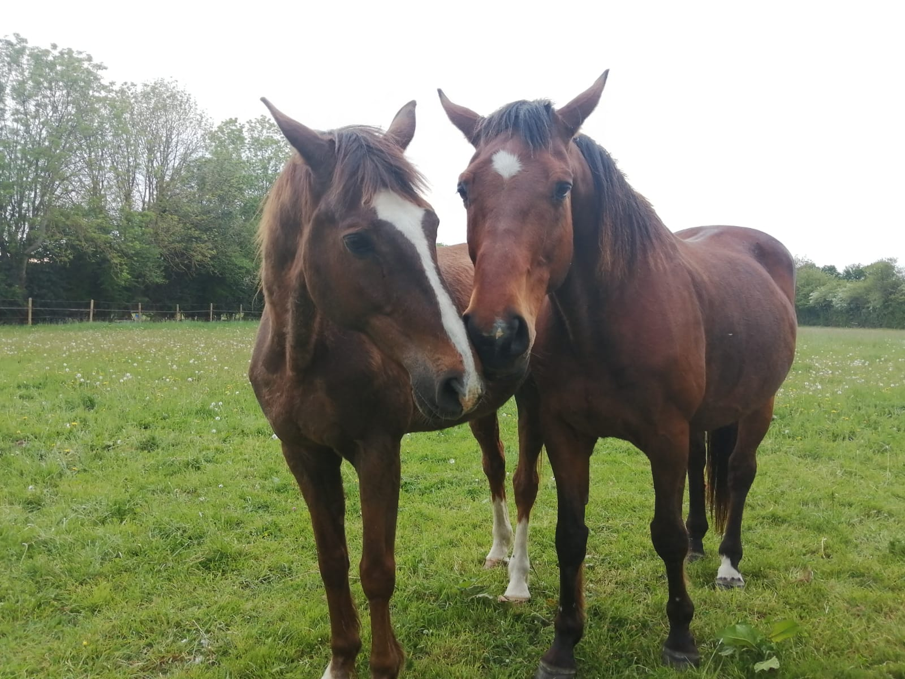
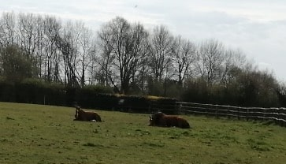
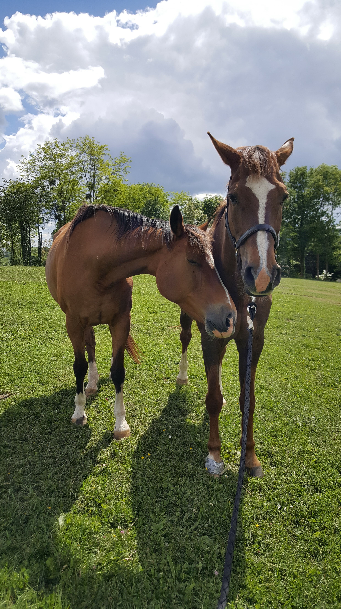
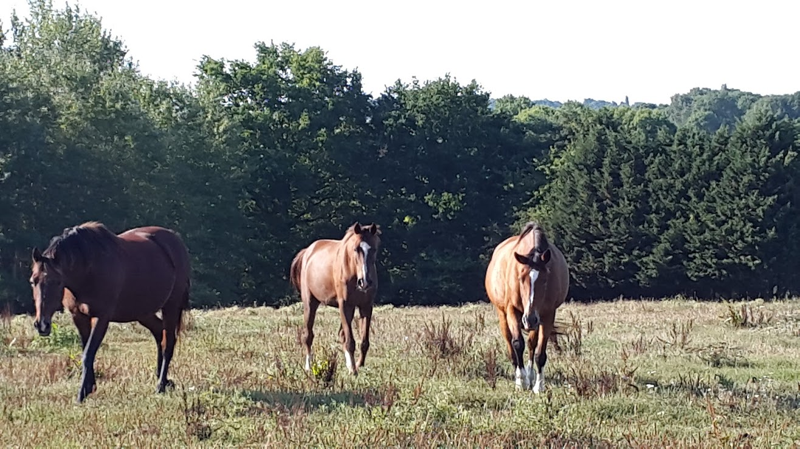

Des potes et de l'herbe
Les besoins fondamentaux des chevaux
Les besoins vitaux d'un cheval sont les besoins d'alimentation, de sommeil, du cycle naturel et de sécurité.
Les besoins alimentaires
Le cheval a évidemment besoin de boire régulièrement, entre 20 et 40 litres par jour et parfois plus.
Un cheval mange jusqu'à 16 heures par jour lorsqu'il est en liberté ! Les rations de foin et de grains fractionnées en deux ou trois, comme pour les humains, sont une hérésie pour les chevaux. Ils ont besoin de manger de façon régulière et en petite quantité. Un cheval en liberté broute quasi continuellement et cette nécessité est liée aux caractéristiques de son appareil digestif. Son intestin de petite taille n'est pas prévu pour stocker de la nourriture en grande quantité. Il doit donc prendre des repas plus petits et plus nombreux. Ceci permet d'éviter les problèmes digestifs comme les bouchons oesophagiens, les coliques, les ulcères, les tics d'ennuis.
Le besoin de sommeil
Les chevaux ont besoin de se coucher entièrement pour atteindre 15 minutes de sommeil paradoxal par jour. Un cheval ne dort pas plusieurs heures d'affilée, mais récupère par courtes phases de sommeil plus ou moins profondes. Le cheval dispose d'un sommeil différent de l'homme et y consacre peu de temps. Cette particularité s'explique par sa position de proie dans l'échelle naturelle de la prédation. En effet, un cheval, de par son instinct de fuite, est presque constamment en éveil. Et pour dormir, le cheval a besoin de la surveillance d'un congénère pour lui procurer un sentiment de sécurité.
Les besoins sociaux
Le cheval est un animal grégaire. Il doit vivre au sein d'un groupe et nouer des amitiés lui permettant de se sentir rassuré et protégé. Un cheval au pré a impérativement besoin d'un compagnon.
 Le besoin de sécurité
Le besoin de sécurité et la nécessité de pouvoir fuir expliquent des comportements que nous trouvons parfois absurdes ou qui nous laissent penser que notre cheval est idiot. Au contraire, le besoin de sécurité est l'une des bases fondamentales de la psychologie du cheval. Il va trouver son salut dans la fuite face à l'inconnu ou la peur. La fuite joue un rôle très important. Il s'agit d'un comportement instintif et invariable. Avec la confiance, un cheval va pouvoir se référer à son cavalier, qu'il va considérer comme son "leader" et ainsi ne pas fuire systémiquement (cf : article sur la confiance).
Le besoin d'espace
Un cheval a besoin de se défouler, de marcher, de jouer, en parfaite liberté plusieurs heures par jour.
Les besoins spécifiques de Kenzo
Je connaissais bien sûr tous ces principes et depuis que je suis propriétaire de Kenzo, je lui ai toujours trouvé des pensions avec la possibilité d'être au pré. Mais, si ces besoins sont fondamentaux pour les chevaux, chaque cheval est différent et peut avoir besoin de soins spécifiques. C'est le cas avec Kenzo et pour combler ces besoins spécifiques, j'ai fait le choix de le placer à plus de 2 heures de chez moi.
Kenzo est un cheval qui peut être anxieux et qui a des problèmes digestifs et d'estomac. Il a besoin d'être nourri à l'herbe toute l'année, avoir du foin à volonté et de bonne qualité ainsi qu'une alimentation pauvre en amidon fractionnée en plusieurs petits repas. Il a également horreur de la boue en hiver.
Avec tous ces critères en main, j'ai appelé une quinzaine de pensions et visité une demi douzaine d'entre elles, pour finalement trouver la pension idéale pour Kenzo. Chaque pension peut être idéale pour les besoins spécifiques de son cheval. Toutes les écuries que j'avais visitées et dans lesquelles Kenzo a vécu étaient de bonnes pensions, mais elles ne correspondaient plus à ce que je cherchais pour Kenzo.
Je suis ravie de mon choix, je vois mon cheval s'épanouir de plus en plus chaque jour. Je reçois des photos et des vidéos quasiment tous les jours et moi je peux enfin souffler et arrêter de m'inquiéter 6 mois sur 12. Cela ne m'empêche pas de penser à Kenzo des dizaines de fois par jour !